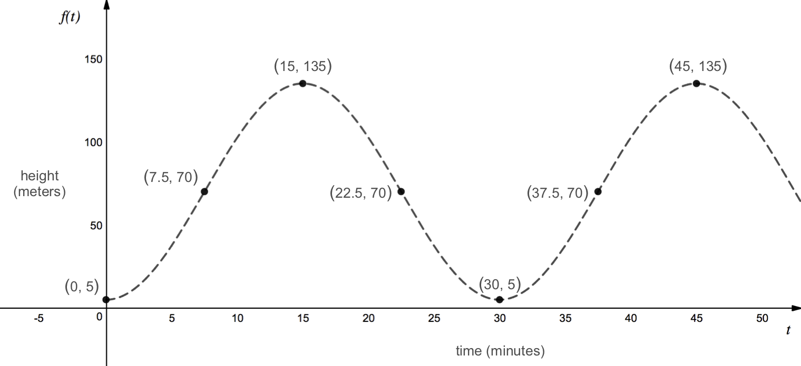

Let's start by drawing a picture of the Ferris wheel and labeling the known information.
We know that at time \(t=0\) a rider boards the Ferris wheel from the boarding platform, which is 5 meters above the ground. We also know that the Ferris wheel has a diameter of 130 meters and it takes 30 minutes to complete one full revolution around the Ferris wheel.
Since it takes 30 minutes to complete a trip around the Ferris wheel, a rider will reach the top of the Ferris wheel after 15 minutes (assuming that the wheel rotates at a constant speed). Similarly, the rider will reach the three o'clock and nine o'clock positions on the Ferris wheel at 7.5 minutes and 22.5 minutes.

Next, we can make a table of the rider's height above ground vs. time.
At time \(t=0\text{,}\) the rider is at the boarding platform, which corresponds to a height of 5 meters above ground. After 15 minutes, the rider reaches the top of the Ferris wheel, which corresponds to a height of 135 meters above ground. We can find this height by taking the height of the boarding platform plus the diameter of the Ferris wheel.
We can also find an intermediate height corresponding to when the rider has been on the Ferris wheel for 7.5 minutes and 22.5 minutes. At these two positions, the rider is halfway between the top of the Ferris wheel and the boarding platform. We can find this height by adding the height of the boarding platform to the radius of the Ferris wheel. Therefore, we get a height of \(5+65 = 70\) meters above ground at these two times.
After 30 minutes, the rider is back at the boarding platform, which corresponds to a height of 5 meters above ground. If the individual were to continue riding the Ferris wheel, this pattern of heights would continue and we could extend our table with additional times and heights as shown below.
| time, \(t\) (minutes) |
0 |
7.5 |
15 |
22.5 |
30 |
37.5 |
45 |
| height, \(h=f(t)\) (meters) |
5 |
70 |
135 |
70 |
5 |
70 |
135 |
Now that we have a table of times and corresponding heights, we can plot these points and draw a smooth curve between them to create a height vs. time graph.
Since we are graphing height as a function of time, time is our independent variable and should be plotted along the horizontal axis while height is the dependent variable and should be plotted along the vertical axis.
Note that in this example, we assumed that the Ferris wheel was rotating counterclockwise, as shown in our sketch above. For this problem, it did not matter what direction the Ferris wheel was rotating because both clockwise and counterclockwise rotation would have produced the same height vs. time graph. However, this will not always be the case. If the rider were to start in the three o'clock or nine o'clock position, we would need to know whether the Ferris wheel was turning clockwise or counterclockwise in order to sketch a graph of the rider's height above ground.